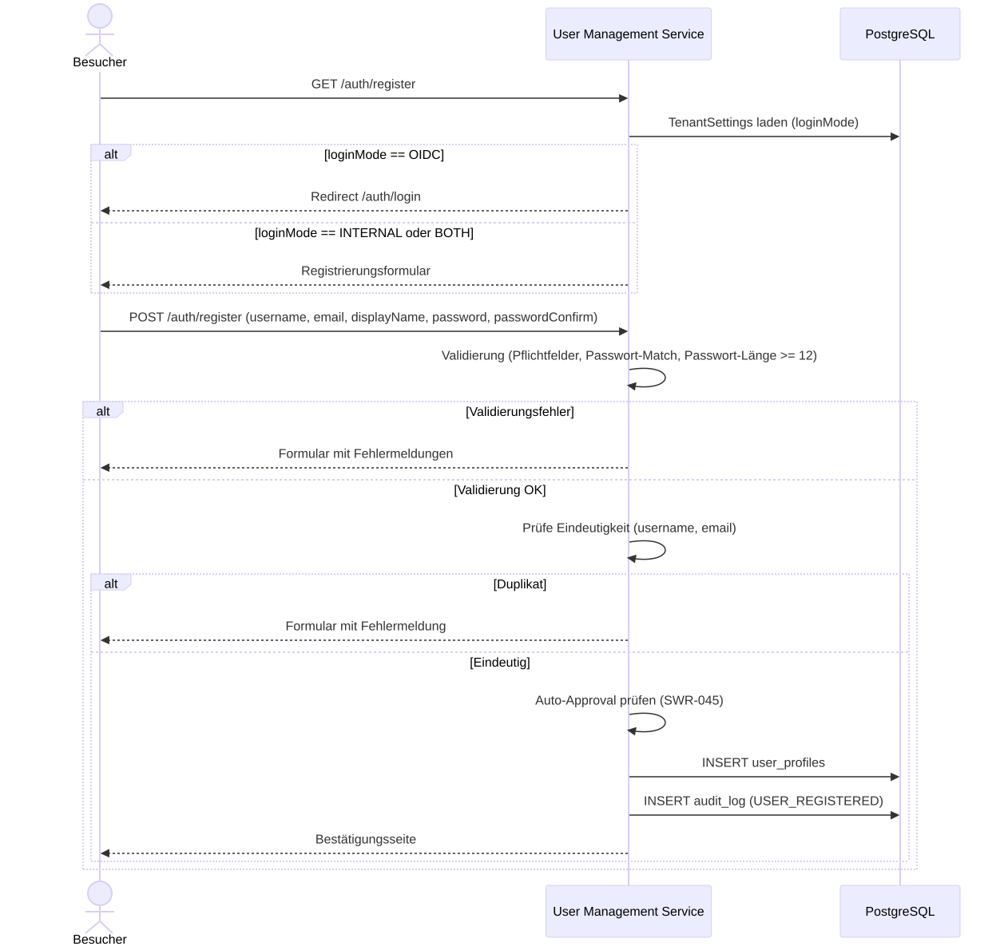
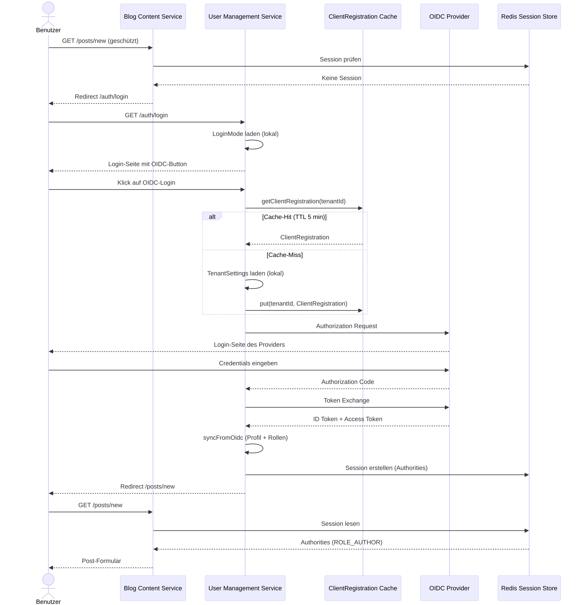

User Management Service: Detail Design
- 1. Überblick
- 2. Domain-Modell
- 3. Application Layer
- 4. Adapter Layer
- 5. Inbound: Thymeleaf Web-UI (ADR-0032)
- 5.1. Login-Seite (/auth/login, SWR-044)
- 5.2. Break-Glass Admin-Login (/auth/admin/login, SWR-028)
- 5.3. Registrierungsseite (/auth/register, SWR-060)
- 5.4. Admin-UI: Benutzerverwaltung (/auth/admin/users, SWR-051)
- 5.5. Admin-UI: Tenant-Einstellungen (/auth/admin/settings, SWR-052)
- 5.6. SuperAdmin Tenant-Umschaltung (SWR-053)
- 5.7. OIDC-Login-Flow (SWR-016, SWR-063)
- 5.8. Interner Login-Flow
- 6. Integration mit Blog Content Service
- 7. Anforderungsabdeckung
1. Überblick
Der User Management Service verwaltet plattformspezifische Benutzerprofile, Rollen und Tenant-Zuordnungen (SWR-043). Er ergänzt den externen OIDC Provider Authentik (ADR-0027): Authentik übernimmt die Authentifizierung (Login, MFA, Passwort-Policies), während dieser Service die Autorisierungsdaten intern verwaltet.
Der Tenant-Administrator kann pro Tenant konfigurieren, ob Login über interne Accounts, OIDC oder beides erlaubt ist (SWR-044, STK031).
Auch bei reinem OIDC-Login bleibt ein separates Break-Glass Admin-Login unter /admin/login verfügbar.
Neue Benutzer können optional automatisch freigegeben werden, wenn sie sich über OIDC anmelden oder ihre E-Mail-Domain auf einer Whitelist steht (SWR-045, STK032).
Die Architektur folgt der hexagonalen Architektur (SWA-001) mit klarer Trennung von Domain, Application und Adapter Layer (SWA-029). Der Service verwendet eine eigene PostgreSQL-Datenbank (Database per Service, ADR-0019).
2. Domain-Modell
Das Domain-Modell bildet Benutzerprofile mit ihren Rollen und Tenant-Zuordnungen ab.
Die rollenbasierte Zugriffskontrolle (SWR-007) wird über das Enum Role mit den Werten ADMIN, AUTHOR, REVIEWER und READER abgebildet.
Neue Benutzer erhalten initial den Status PENDING und die Rolle READER, bis ein Tenant-Admin sie freigibt (STK028).
Nicht angemeldete Benutzer werden wie READER behandelt (STK029).
Das folgende Klassendiagramm zeigt die Struktur:

2.1. Aggregate Root: UserProfile
Das UserProfile ist das einzige Aggregate im Service.
Es wird über den OIDC Subject (die eindeutige Kennung des Benutzers beim Identity Provider) identifiziert.
-
oidcSubjectist unveränderlich und dient als natürlicher Schlüssel für OIDC-Benutzer. Bei internen Accounts ist das Feld null. -
usernameundpasswordHashwerden nur für interne Accounts (AuthSource.INTERNAL) verwendet. Das Passwort wird mit BCrypt gehasht. -
authSourcegibt an, ob der Benutzer über OIDC oder über ein internes Konto authentifiziert wird. -
approvalStatusist initial PENDING. Erst nach Freigabe durch einen Tenant-Admin (APPROVED) können dem Benutzer Rollen über READER hinaus zugewiesen werden (STK028). Optional kann Auto-Approval aktiviert werden (SWR-045). -
globalRolessind Rollen, die für alle Tenants gelten (z.B. SUPERADMIN für Plattform-Administration). -
tenantMembershipsordnen den Benutzer einzelnen Tenants mit einer spezifischen Rolle zu. -
getEffectiveRoles(tenantId)kombiniert globale Rollen mit der tenant-spezifischen Rolle. Für nicht-approved Benutzer wird immer nur READER zurückgegeben. -
syncFromOidcakzeptiert optional OIDC-Gruppen und mappt sie auf plattforminterne Rollen (konfigurierbar).
2.2. Rollen-Semantik
Die fünf Rollen (SWR-007) haben folgende Bedeutung:
| Rolle | Berechtigung |
|---|---|
|
Plattformweiter Vollzugriff: Tenant-Verwaltung, Plattform-Konfiguration. Credentials werden über die Infrastruktur gesetzt (Umgebungsvariable/Secret). Es gibt genau einen SUPERADMIN pro Plattform-Instanz. |
|
Tenant-Admin: Benutzer- und Content-Verwaltung innerhalb eines Tenants, Benutzer-Freigabe |
|
Eigene Posts erstellen, bearbeiten und veröffentlichen |
|
Veröffentlichte und zur Review freigegebene Posts lesen und Review-Feedback geben |
|
Nur Lesezugriff auf veröffentlichte Inhalte |
Nicht angemeldete Benutzer (anonyme Besucher) werden wie READER behandelt (STK029). Ein Benutzer ohne explizite Tenant-Zuordnung erhält die Rolle READER als Fallback.
2.3. Login-Modus (Tenant-Konfiguration)
Der Tenant-Administrator legt fest, welche Login-Methoden für reguläre Benutzer verfügbar sind (SWR-044, STK031). Das folgende Diagramm zeigt die Konfigurationsstruktur:

-
INTERNAL: Nur formbasierter Login mit internen Accounts (Username/Passwort). -
OIDC: Nur Login über den konfigurierten OIDC Provider. Die reguläre Login-Seite zeigt nur den OIDC-Button. In diesem Modus müssenoidcIssuerUrlundoidcClientIdgesetzt sein. -
BOTH: Sowohl formbasierter als auch OIDC-Login stehen zur Verfügung. Auch hier müssen die OIDC-Felder konfiguriert sein.
Bei Neuanlage eines Tenants wird der LoginMode auf INTERNAL gesetzt (SWR-044).
Die Umstellung auf OIDC oder BOTH erfordert die vorherige Konfiguration der OIDC-Felder (oidcIssuerUrl, oidcClientId).
Unabhängig vom LoginMode ist unter /admin/login ein separates formbasiertes Admin-Login-Formular verfügbar (Break-Glass-Lösung).
Nur Benutzer mit der Rolle ADMIN können sich dort anmelden.
2.4. Auto-Approval
Neue Benutzer können optional automatisch freigegeben werden (SWR-045, STK032), statt auf manuelle Freigabe durch den Tenant-Admin warten zu müssen:
-
autoApproveOidc: Wenn aktiviert, erhalten Benutzer, die sich über OIDC anmelden, direkt den Status APPROVED. -
autoApproveEmailDomains: Eine Liste von E-Mail-Domains (z.B.example.com). Benutzer, deren E-Mail-Adresse zu einer dieser Domains gehört, erhalten direkt den Status APPROVED.
Die Prüfung erfolgt beim Erstellen eines neuen UserProfile im syncFromOidc- bzw. syncFromInternal-Flow.
2.5. OIDC-Provider-Konfiguration pro Tenant (SWR-061, STK047)
Die OIDC-Provider-Konfiguration wird pro Tenant in den TenantSettings gespeichert (SWR-061).
Dadurch kann jeder Tenant seinen eigenen Identity-Provider nutzen.
Folgende Felder stehen zur Verfügung:
-
oidcIssuerUrl: Die Issuer-URL des OIDC-Providers (z.B.https://auth.example.com/application/o/myapp/). Aus dieser URL werden die Standard-OIDC-Endpunkte per OpenID Connect Discovery (.well-known/openid-configuration) automatisch abgeleitet. -
oidcClientId: Die Client-ID für die OIDC-Registrierung beim Provider. -
oidcClientSecret: Das Client-Secret (verschlüsselt gespeichert). In API-Responses wird das Secret maskiert als*zurückgegeben, wenn ein Wert gesetzt ist.
Beim Aktualisieren der Tenant-Einstellungen wird das oidcClientSecret nur geändert, wenn ein neuer Wert übermittelt wird.
Ein leeres oder mit * gefülltes Secret-Feld bedeutet, dass der bestehende Wert beibehalten wird.
Wenn der loginMode auf OIDC oder BOTH gesetzt wird, müssen oidcIssuerUrl und oidcClientId ausgefüllt sein.
Bei INTERNAL sind die OIDC-Felder optional und werden ignoriert.
3. Application Layer
Der Application Layer definiert die Inbound- und Outbound-Ports. Das folgende Diagramm zeigt die Portstruktur:

3.1. Inbound Port: UserProfileUseCase
Das Interface UserProfileUseCase bietet folgende Operationen:
-
syncFromOidc(SyncUserCommand): Erstellt oder aktualisiert ein Benutzerprofil anhand der OIDC-Claims. Idempotent (Upsert-Semantik). AktualisiertlastLoginAt. Übernimmt optional OIDC-Gruppen und mappt sie auf Rollen. Prüft Auto-Approval-Regeln bei neuen Profilen (SWR-045). -
syncFromInternal(SyncInternalUserCommand): Erstellt oder aktualisiert ein internes Benutzerprofil (formbasierter Login). Prüft Auto-Approval anhand der E-Mail-Domain. -
register(RegisterUserCommand): Registriert einen neuen lokalen Benutzer (SWR-059, STK046). Validiert Eindeutigkeit von Username und E-Mail. Hasht das Passwort mit BCrypt. Setzt AuthSource auf INTERNAL, Rolle auf READER und ApprovalStatus auf PENDING (mit Auto-Approval-Prüfung). Wirft eine Exception bei Duplikaten. -
findByOidcSubject(String): Gibt das Profil mit Rollen und Tenant-Zuordnungen zurück (für OIDC-Benutzer). -
findByUsername(String): Gibt das Profil mit Rollen zurück (für interne Benutzer). -
approveUser/rejectUser: Ändert den ApprovalStatus (nur durch ADMIN, STK028). -
assignGlobalRole/removeGlobalRole: Verwaltet globale Rollen (nur durch ADMIN, nur für approved Benutzer). -
addTenantMembership/removeTenantMembership: Verwaltet Tenant-Zuordnungen (nur durch ADMIN).
3.2. Outbound Port: UserProfileRepository
Das Interface UserProfileRepository abstrahiert die Persistenz:
-
save(UserProfile): Speichert oder aktualisiert ein UserProfile. -
findByOidcSubject(String): Sucht nach OIDC Subject (für OIDC-Benutzer). -
findByUsername(String): Sucht nach Username (für interne Benutzer). -
existsByUsername(String): Prüft, ob ein Username bereits vergeben ist (für Registrierung, SWR-059). -
existsByEmail(String): Prüft, ob eine E-Mail-Adresse bereits vergeben ist (für Registrierung, SWR-059).
3.3. Inbound Port: TenantSettingsUseCase
Das Interface TenantSettingsUseCase kapselt die Verwaltung der Tenant-Einstellungen:
-
getSettings(TenantId): Gibt die Einstellungen des Tenants zurück (inklusive OIDC-Konfiguration, Secret maskiert). -
updateSettings(TenantId, …): Aktualisiert die Einstellungen inklusive OIDC-Provider-Konfiguration. Validiert, dass bei LoginModeOIDCoderBOTHdie FelderoidcIssuerUrlundoidcClientIdgesetzt sind (SWR-061). -
listTenants(): Gibt alle konfigurierten Tenants zurück (für SuperAdmin Tenant-Umschaltung).
4. Adapter Layer
4.1. Inbound: REST API
Der UserController stellt die REST-API unter /api/users bereit, der TenantSettingsController die Tenant-Einstellungen unter /api/tenant-settings.
Diese APIs sind nur für interne Service-Kommunikation vorgesehen und werden durch API-Key-Authentifizierung (ApiKeyAuthenticationFilter) und Linkerd mTLS (SWA-023) geschützt.
| Methode | Pfad | Beschreibung |
|---|---|---|
POST |
/api/users/sync |
Synchronisiert ein Benutzerprofil aus OIDC-Claims (Upsert). Gibt das aktuelle Profil mit Rollen zurück. |
GET |
/api/users/{oidcSubject} |
Gibt das Benutzerprofil mit Rollen und Tenant-Zuordnungen zurück. |
POST |
/api/users/{oidcSubject}/approve |
Gibt einen Benutzer frei (setzt ApprovalStatus auf APPROVED). Nur durch ADMIN (STK028). |
POST |
/api/users/{oidcSubject}/reject |
Lehnt einen Benutzer ab (setzt ApprovalStatus auf REJECTED). Nur durch ADMIN. |
POST |
/api/users/register |
Registriert einen neuen lokalen Benutzer (SWR-059). Erwartet username, password, email, displayName. Gibt HTTP 201 mit Profil zurück. Bei Duplikat HTTP 409. |
4.2. Inbound: gRPC API
Der UserManagementGrpcService und TenantSettingsGrpcService stellen die gRPC-APIs bereit, die vom Blog Content Service für die Profil-Synchronisation und Tenant-Einstellungen genutzt werden.
Der GrpcExceptionInterceptor sorgt für einheitliche Fehlerbehandlung aller gRPC-Aufrufe.
4.3. Outbound: PostgreSQL (JPA)
Die Persistenz wird über Spring Data JPA implementiert (SWA-029). Das folgende Diagramm zeigt die JPA-Entities:

Zusätzlich existiert die audit_log-Tabelle (SWR-056) zur Protokollierung aller fachlich relevanten Aktionen:
CREATE TABLE audit_log (
id UUID PRIMARY KEY,
timestamp TIMESTAMP NOT NULL,
tenant_id VARCHAR(255),
actor VARCHAR(255) NOT NULL,
action VARCHAR(255) NOT NULL,
entity_type VARCHAR(255) NOT NULL,
entity_id VARCHAR(255) NOT NULL,
details TEXT
);4.4. Outbound: Audit Logging (SWR-056, SWA-031)
Der JpaAuditLogger implementiert den AuditLogger-Port aus dem Shared Kernel und persistiert alle Audit-Einträge in der audit_log-Tabelle.
Er wird als @Component registriert und in die Application Services (UserProfileService, TenantSettingsService) injiziert.
Auditierte Aktionen umfassen Benutzer-Synchronisation (OIDC und intern), Freigabe/Ablehnung, Rollenzuweisung, Tenant-Mitgliedschaftsverwaltung und Änderungen an Tenant-Einstellungen.
5. Inbound: Thymeleaf Web-UI (ADR-0032)
Der User Management Service stellt eine eigene Thymeleaf-basierte Web-Oberfläche für Authentifizierung und Benutzerverwaltung bereit (ADR-0032).
Damit entfällt die bisherige Kopplung, bei der der Blog Content Service diese UI hostete und per gRPC die benötigten Daten abfragte.
Alle Auth- und Admin-Seiten laufen nun unter dem Pfadpräfix /auth/ und werden über das API Gateway geroutet (ADR-0017).
5.1. Login-Seite (/auth/login, SWR-044)
Die Login-Seite wertet den LoginMode des aktuellen Tenants direkt aus der lokalen Datenbank aus:
-
INTERNAL: Zeigt nur das Username/Passwort-Formular. -
OIDC: Zeigt nur den OIDC-Login-Button (Redirect zum konfigurierten Provider). -
BOTH: Zeigt sowohl Formular als auch OIDC-Button.
Da der User Management Service die TenantSettings lokal hält, entfällt der bisherige gRPC-Roundtrip für jede Login-Seite.
5.2. Break-Glass Admin-Login (/auth/admin/login, SWR-028)
Unter /auth/admin/login steht ein separates formbasiertes Login-Formular bereit.
Nur der SUPERADMIN kann sich dort anmelden, unabhängig vom LoginMode.
Die Credentials werden über die Infrastruktur (Umgebungsvariable/Secret) gesetzt.
5.3. Registrierungsseite (/auth/register, SWR-060)
Der User Management Service stellt eine Registrierungsseite unter /auth/register bereit:
-
Das Formular enthält Felder für Username, E-Mail, Anzeigename, Passwort und Passwort-Bestätigung.
-
Die Seite ist nur erreichbar, wenn der LoginMode des Tenants
INTERNALoderBOTHist. BeiOIDCwird auf/auth/loginweitergeleitet. -
Die Login-Seite zeigt einen Link „Registrieren" an, wenn lokale Registrierung erlaubt ist.
-
Bei Validierungsfehlern wird das Formular mit Fehlermeldungen und den eingegebenen Werten (außer Passwort) erneut angezeigt.
-
Nach erfolgreicher Registrierung wird eine Bestätigungsseite angezeigt (STK028).
-
Der Controller greift direkt auf den lokalen
UserProfileUseCasezu (kein gRPC-Umweg).
Das folgende Sequenzdiagramm zeigt den Registrierungsablauf:

5.4. Admin-UI: Benutzerverwaltung (/auth/admin/users, SWR-051)
Unter /auth/admin/users wird eine Thymeleaf-Seite bereitgestellt, die alle Benutzer des aktuellen Tenants auflistet (Name, E-Mail, Rolle, Approval-Status).
Verfügbare Aktionen: Approve, Reject, Rolle ändern.
Zugriff nur für Benutzer mit Rolle ADMIN oder SUPERADMIN.
Der Controller greift direkt auf den lokalen UserProfileUseCase zu.
5.5. Admin-UI: Tenant-Einstellungen (/auth/admin/settings, SWR-052)
Unter /auth/admin/settings wird eine Thymeleaf-Seite bereitgestellt, die die Tenant-Einstellungen (Login-Mode, Auto-Approval-Regeln, Branding, OIDC-Konfiguration) anzeigt und bearbeitbar macht.
Zugriff nur für Benutzer mit Rolle ADMIN oder SUPERADMIN.
Der Controller greift direkt auf den lokalen TenantSettingsUseCase zu.
5.6. SuperAdmin Tenant-Umschaltung (SWR-053)
Der SuperAdmin kann über einen Tenant-Selector in der Admin-Navigation den aktiven Tenant wechseln.
Die Auswahl wird in der Redis-Session gespeichert (SWR-064).
POST /auth/admin/switch-tenant speichert die Auswahl und leitet auf die aktuelle Seite zurück.
5.7. OIDC-Login-Flow (SWR-016, SWR-063)
Der OIDC-Flow läuft vollständig im User Management Service ab.
Das TenantAwareClientRegistrationRepository lädt die OIDC-Konfiguration pro Tenant direkt aus der lokalen Datenbank (SWR-063, kein gRPC-Umweg).
Das folgende Sequenzdiagramm zeigt den Ablauf:

5.8. Interner Login-Flow
-
Der Benutzer gibt Username/Passwort auf
/auth/loginoder/auth/admin/loginein. -
Spring Security authentifiziert direkt gegen die lokale Datenbank.
-
Der User Management Service erstellt eine Session in Redis mit den Rollen des Benutzers.
-
Redirect zurück zum Blog Content Service, der die Redis-Session liest.
6. Integration mit Blog Content Service
Nach ADR-0032 ist die Integration zwischen den Services deutlich vereinfacht. Der Blog Content Service führt keine eigenen Login-Flows mehr durch, sondern nutzt die vom User Management Service in Redis erstellten Sessions (SWR-064).
6.1. Session-basierte Integration (SWR-064)
Beide Services verwenden Spring Session Data Redis mit identischer Konfiguration:
-
Gleicher Redis-Namespace und Cookie-Name
-
Gleiche Serialisierung (Spring Security
SecurityContext) -
Gleiche Session-TTL und Cookie-Konfiguration (Domain, Path, Secure, HttpOnly)
Der Blog Content Service liest die bestehende Session aus Redis und nutzt die enthaltenen GrantedAuthority-Objekte für die Zugriffskontrolle.
Unauthentifizierte Benutzer werden per Redirect auf /auth/login weitergeleitet.
6.2. gRPC-API (verbleibende Nutzung)
Die gRPC-API wird weiterhin für Operationen benötigt, die der Blog Content Service zur Laufzeit braucht:
-
Tenant-Branding (SWR-050):
GetTenantSettingsfür displayName und tagline im Header -
Tenant-Liste (SWR-053):
ListTenantsfür den SuperAdmin Tenant-Selector (jetzt im User Management Service)
Die bisherigen gRPC-Aufrufe für Login-Mode, OIDC-Konfiguration und Benutzeroperationen entfallen.
6.2.1. REST-API (SWR-059)
Der User-Management-Service stellt einen öffentlichen REST-Endpunkt bereit:
| Methode | Pfad | Beschreibung |
|---|---|---|
POST |
/api/users/register |
Registriert einen neuen lokalen Benutzer. Erwartet username, password, email und displayName. Gibt HTTP 201 mit Benutzerprofil (ohne Passwort-Hash) zurück. Bei Duplikat HTTP 409. |
Validierungsregeln:
-
username: Pflichtfeld, muss eindeutig sein -
email: Pflichtfeld, gültiges E-Mail-Format, muss eindeutig sein -
password: Pflichtfeld, mindestens 12 Zeichen, wird serverseitig mit BCrypt gehasht (salted hash, BCrypt erzeugt automatisch ein zufälliges Salt pro Passwort) -
displayName: optional
Der neue Benutzer erhält AuthSource.INTERNAL, die Rolle READER und den ApprovalStatus.PENDING (SWR-007, STK028).
Auto-Approval-Regeln (SWR-045) werden bei der Registrierung geprüft: Wenn die E-Mail-Domain auf der Whitelist des Tenants steht, wird der Status direkt auf APPROVED gesetzt.
7. Anforderungsabdeckung
| Anforderung | Beschreibung | Abdeckung |
|---|---|---|
SWR-007 |
Rollenbasierte Zugriffskontrolle (SUPERADMIN, ADMIN, AUTHOR, REVIEWER, READER) |
Domain: Role Enum, UserProfile.getEffectiveRoles() |
SWR-016 |
OIDC Login mit Authentik, optionales Gruppen-Mapping |
Web-UI: OIDC-Flow im User Management Service, SyncingOidcUserService |
SWR-028 |
Break-Glass Admin-Login |
Web-UI: /auth/admin/login (formbasiert, nur SUPERADMIN) |
SWR-043 |
User-Management-Service für Profile, Rollen, Tenant-Zuordnung |
Alle Layer |
SWR-044 |
Konfigurierbare Login-Methode und Break-Glass Admin-Login |
Domain: TenantSettings.loginMode, Web-UI: /auth/login, /auth/admin/login |
SWR-045 |
Auto-Approval bei OIDC-Login und E-Mail-Domain |
Domain: TenantSettings, Application: syncFromOidc/syncFromInternal |
SWR-051 |
Admin-UI Benutzerliste und -verwaltung |
Web-UI: /auth/admin/users (direkt auf lokalen UseCase) |
SWR-052 |
Admin-UI Tenant-Einstellungen |
Web-UI: /auth/admin/settings (direkt auf lokalen UseCase) |
SWR-053 |
SuperAdmin Tenant-Umschaltung |
Web-UI: /auth/admin/switch-tenant, Redis-Session |
SWR-059 |
REST-API für lokale Benutzerregistrierung |
REST: POST /api/users/register, Application: UserProfileService |
SWR-060 |
Thymeleaf-Registrierungsseite |
Web-UI: /auth/register (direkt auf lokalen UseCase) |
SWR-063 |
Dynamische OIDC-Client-Registrierung pro Tenant |
Web-UI: TenantAwareClientRegistrationRepository (lokaler DB-Zugriff) |
SWR-064 |
Shared Redis Session |
Web-UI: Session-Erstellung, Blog Content Service: Session-Validierung |
STK028 |
Benutzer-Freigabe durch Tenant-Admin |
Domain: ApprovalStatus, Application: approveUser/rejectUser |
STK029 |
Nicht angemeldete Benutzer als Reader |
Blog Content Service: anonyme Requests erhalten READER-Rechte |
STK031 |
Konfigurierbare Login-Methode pro Tenant |
Domain: LoginMode, TenantSettings |
STK032 |
Auto-Approval neuer Benutzer |
Domain: TenantSettings.autoApproveOidc, autoApproveEmailDomains |
STK046 |
Lokale Benutzerregistrierung |
SWR-059 (REST-API), SWR-060 (Web-UI) |
STK047 |
OIDC-Konfiguration pro Tenant über Admin-Interface |
SWR-061 (Datenhaltung), SWR-062 (Admin-UI), SWR-063 (dynamische Registrierung) |
SWA-001 |
Hexagonale Architektur |
Ports & Adapters Struktur |
SWA-010 |
Authentik OIDC und leichtgewichtiger User-Management-Service |
Gesamtarchitektur |
SWA-029 |
User-Management-Service Architektur (hexagonal) |
Alle Layer |
SWR-056 |
Audit-Logging für alle relevanten Aktionen |
JpaAuditLogger, AuditLogEntry, UserProfileService/TenantSettingsService Audit-Aufrufe, V5 Migration |
SWA-031 |
Audit-Logging-Architektur |
AuditLogger (Port im Shared Kernel), JpaAuditLogger (Outbound Adapter), audit_log-Tabelle |
SWR-061 |
Tenant-spezifische OIDC-Provider-Konfiguration |
Domain: TenantSettings (oidcIssuerUrl, oidcClientId, oidcClientSecret), JPA |
SWR-062 |
OIDC-Konfiguration in der Admin-Oberfläche |
Web-UI: /auth/admin/settings OIDC-Sektion |